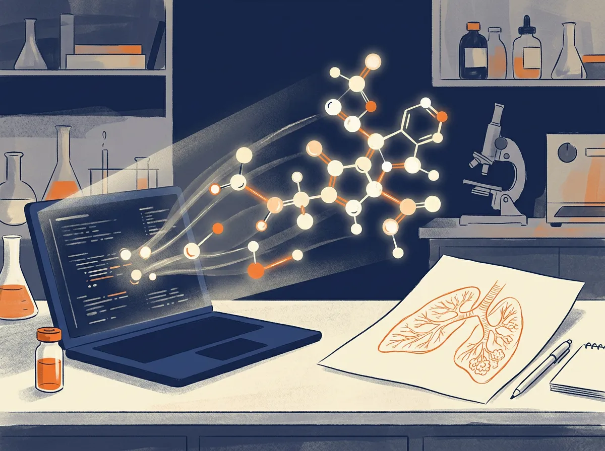

AI × MEDICINE · 前沿速递 第 1 期
AI 进医院很快，证据跟上了吗？
批准的 AI 器械越来越多，真正证明“让病人更好”的很少。但第一批大样本随机试验，已经开始交卷。
阅读约 8 分钟 · 数据截至 2026-11 · 每条都附原始出处美国 FDA 的公开清单显示，截至 2026 年 6 月底的决定，已有 1614 个 AI 医疗器械获准上市，约四分之三属于放射科。仅 2025 年就新增 335 个。
可是一项 2026 年发表在 PLOS Digital Health 的系统分析发现：在 1357 个已获批 AI 器械里，只有 3 个评估过死亡率、并发症、再入院这类“患者结局”。
另一边，瑞典 10 万名女性参与的 MASAI 随机试验在 Lancet 发表最终结果；生成式 AI 设计的抗肺纤维化药 rentosertib 进入 III 期。本期就看这三件事：数量、证据、落地。
批得越来越快
2016 年 18 个，2025 年 335 个。
结局证据很薄
大多数走“和已有器械相当”的 510(k) 通道，不需要新的随机试验。
真试验开始出现
筛查、药物、基层诊疗，都有了可以检验的数据。
一张柱状图，一个漏斗
柱子是“批了多少”，漏斗是“其中多少真正测过对病人的影响”。
FDA 每年新列入的 AI 医疗器械（按最终决定年份）
数据：FDA AI-Enabled Medical Devices 清单（2026-09-04 版），按 Kent Applied 统计。2026 年上半年已有 181 个。
1357 个已获批 AI 器械，证据一路缩水
PLOS Digital Health 2026，统计截至 2025-12-05。最后一行为便于看见做了最小宽度处理，实际是 0.2%。
10 万名女性，一场真正的随机试验
往下滚动，左边的图会跟着每一步变化。
不是回顾，是随机
MASAI 试验在 2021-04-12 至 2022-12-07 招募 105,934 名女性。AI 先给每张片子打风险分：低风险的交给 1 名医生读，最高分的交给 2 名医生，并给出可疑区域提示。
敏感度 80.5% vs 73.8%
AI 辅助组发现了更多癌症（p=0.031），在各年龄段、各乳腺密度里都一致；但对原位癌没有优势。
特异度都是 98.5%
多抓了癌，却没有多叫回健康女性。这一点决定了它能不能在人群筛查里推广。
间期癌 1.55 vs 1.76 每千人
“间期癌”是两次筛查之间冒出来的癌，代表上一次漏了。比值 0.88（95% CI 0.65–1.18），达到“不差于”标准，但不能说显著更少。
西班牙：医生读片量少了 63.6%
Nature Medicine 2026 年的配对试验（31,301 名女性）让 AI 把低风险片直接判正常。检出率 7.3 vs 6.3 每千人，但召回率也从 4.8% 升到 5.5%。
第一个走到 III 期的生成式 AI 新药
靶点用 AI 找、分子用生成式 AI 设计。左右滑动看它走到哪一步。

TNIK：AI 选出的纤维化新靶点
英矽智能用 PandaOmics 给靶点排序，再用 Chemistry42 生成并优化分子。
IIa 期结果登上 Nature Medicine
71 名特发性肺纤维化患者、12 周。60 mg 每日一次组 FVC 平均 +98.4 mL，安慰剂组 −20.3 mL。
小样本，有肝损伤停药
高剂量组 18 人中 12 人完成；有 7 人因肝损伤或肝功能异常停药。
III 期启动
GENESIS-IPF-3：约 320 人、中国 47 个中心、52 周、随机双盲安慰剂对照。
首例患者给药
北京协和医院入组首例，同日上海肺科医院也入组。主要终点：一年里肺功能下降多快。
不止一个
Generate:Biomedicines 的 GB-0895（重度哮喘）也在 III 期招募。AI 药能否成功，最终仍要看 III 期。
中国的时间表：2027 和 2030
《关于促进和规范“人工智能+医疗卫生”应用发展的实施意见》
2025-11-04 印发，8 个方向、24 项重点任务
- 一批卫生健康高质量数据集和可信数据空间
- 一批临床专病专科垂直大模型和智能体
- 基本建成一批医疗领域国家人工智能应用中试基地（目前全国 7 个）
- 基层诊疗智能辅助应用基本全覆盖
- 二级以上医院普遍开展影像智能辅助诊断、临床诊疗智能辅助决策
- 标准规范体系基本完善
- 2026-10-10 印发省级实施方案
- 到 2027 年建成 50 个以上卫生健康高质量数据集
- 用“算力券”等方式降低医疗机构算力成本
四条网上说法，逐条盖章
先自己判断，再点“核查”。
FDA 批准的 AI 器械，都证明了能改善病人结局。不实
1357 个里只有 3 个评估过患者结局。获批多数依据的是“与已有器械等同”。
MASAI 证明 AI 可以取代放射科医生。夸大
试验里每张片子仍至少有 1 名医生读，AI 是分诊和提示。它证明的是“人+AI”不比双读差。
AI 设计的抗纤维化药已经获批上市。不实
rentosertib 2026 年 9 月才开始 III 期给药，要跑 52 周。
西班牙试验里，AI 让医生少读了六成多的片子。属实
读片工作量下降 63.6%，检出率更高；代价是召回率从 4.8% 升到 5.5%。
看到一个医疗 AI，先问三句
从急诊室看医疗 AI
- 它测的是准确率，还是患者结局？ 读片准不等于少死人。
- 有没有前瞻性、最好是随机的验证？ 回顾性数据集上的高分，换一家医院常常掉分。
- 出错时谁兜底？ MASAI 里医生始终在环；“AI 直接判正常”的方案，要看漏诊和召回的代价。
一句话：AI 让医生更快，证据决定能不能放手。
来源
- FDA，Artificial Intelligence-Enabled Medical Devices 清单，2026-09-04/09-22 更新，fda.gov
- Kent Applied，AI-enabled medical devices on the FDA's list, by specialty and year，2026-10-30，kentapplied.com
- Growth, Specialty Distribution, and Regulatory Pathways of AI-Enabled Medical Devices 1995–2026，PMC13733602
- 1,357 AI medical devices cleared, 3 actually tested on patient outcomes，PLOS Digital Health 2026，doi:10.1371/journal.pdig.0001597
- Gommers J 等，MASAI 试验间期癌与敏感度/特异度，Lancet 2026;407:505–514，thelancet.com；评论 AI-supported mammography screening: measuring benefit
- AI-based triage and decision support in mammography and DBT: a paired, noninferiority trial，Nature Medicine 2026;32:1296–1305，nature.com
- Insilico Medicine，GENESIS-IPF-3 首例给药，2026-09-10，insilico.com；III 期启动，2026-07-07，insilico.com
- World Pharma AI，rentosertib IIa 期数据与停药情况，2026-09-30，worldpharma.ai
- State of AI Report 2026，Which AI-assisted medicines have reached Phase 3?，stateof.ai
- 国家卫健委等五部门《关于促进和规范“人工智能+医疗卫生”应用发展的实施意见》（国卫办规划发〔2025〕30号），nhc.gov.cn 提案答复
- 广州日报，国家人工智能应用中试基地（医疗领域）广东阶段性成果，2026-10-22，gzdaily.dayoo.com
- 江苏省卫健委，关于推进江苏省“人工智能+医疗健康”发展实施方案，2026-10-10，wjw.jiangsu.gov.cn